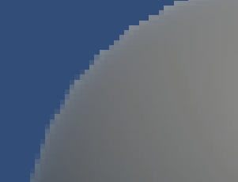
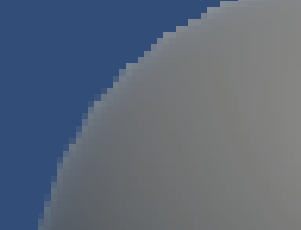
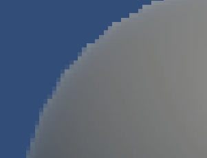

나중에 AA를 적용할 것을 감안하여, SSR같은 곳에서 적절히 디더링만 시켜주고 블러는 안해주는 식으로 흐림 효과를 AA에 맡길 수 있다.

- Luminance Conversion
- 픽셀당 8방향의 Luma가 필요하니 미리 계산해서 alpha채널에 넣거나, 그냥 green그대로 쓰기(명암차는 green에 민감하니)
- Local Contrast Check
- 4방(상하좌우) Luma 차이 계산
- 차이가 미미하면 AA미적용.
- early exit
- Vertical/Horizontal Edge Test
- 8방중 나머지 4방(대각선)의 luma역시 구해서 수평, 수직으로 외곽선 검출하여(Sobel필터 비슷하게) 외곽선의 방향을 얻어낸다.
- End-of-edge Search
- 앞서구한 방향(수평 혹은 수직)으로 외곽선이 끝나는 양쪽 지점 검출
- 양쪽 지점에 대한 평균 luma계산
- Blending
- 외곽선이 끝나는 점 사이에 있는 기준점에 대한 blend값 구함
- blend값을 이용하여 기준점에서 어느정도 떨어진 픽셀값을 반환
- RenderTexture(이하 RT)는 Bilinear filtering된것을 이용
 
